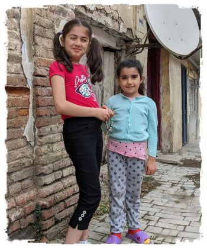

アゼルバイジャン

| Facebookページへは各 |  |
から飛べます |
【アゼルバイジャン1】首都バクーを一旦スルーし、手始めに世界遺産の古都シェキへやってきました。緑濃い山々を見上げる静謐で風薫るまちで、人々の温かさに浸って過ごしています。
水井 彰さんの投稿 2023年7月10日月曜日
【アゼルバイジャン2】マルシュルートカと呼ばれるミニバスに乗って国内第二の都市、ガンジャに移動しました。荘厳でスケールの大きな、鉄道を擁するまちです。 あいにくの雨模様でしたが降ったり止んだりの中を歩き回りました。
水井 彰さんの投稿 2023年7月12日水曜日
【アゼルバイジャン3】再び長距離バスに乗って北部のまちクバにやってきました。典型的な地方都市で人々は温かく、ゆったりと流れるときの中を過ごしています。
水井 彰さんの投稿 2023年7月13日木曜日
【アゼルバイジャン4】宿の女将に「明日ラザに行かない？」との誘いを受けました。 14時の最終バスでバクーに戻るつもりであることを伝えると、16時まで出ているから大丈夫とのこと。もとより個人で行くには無理のある場所だったので、渡りに船と参加させてもらうことにしました。
水井 彰さんの投稿 2023年7月14日金曜日
【アゼルバイジャン5】バクーとその郊外を巡って一週間に渡った旅を締めます。 巷で囁かれる「第二のドバイ」とまでは行かずとも、古きものと奇抜なるものが入り混じった不思議なまちの力強い鼓動を感じることができました。
水井 彰さんの投稿 2023年7月16日日曜日
【UAE/スリランカ】帰国便は乗り継ぎが悪く、アブダビで半日、コロンボで丸一日時間が空く形となりました。 となれば当然まちに繰り出したくなるわけですが、性善説に骨の髄まで染まっていた私に二十年ぶりのコロンボは厳しい現実を突き付けてきました。
水井 彰さんの投稿 2023年7月18日火曜日